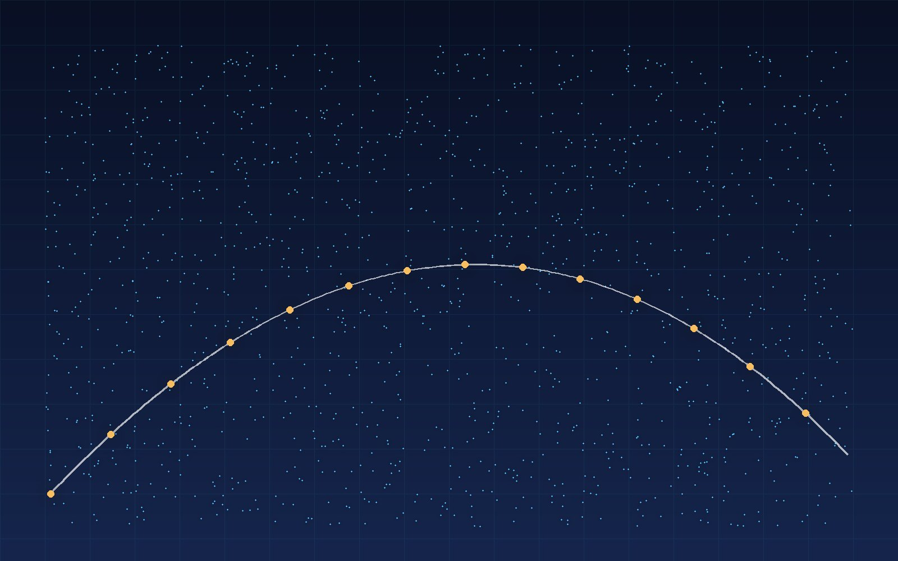
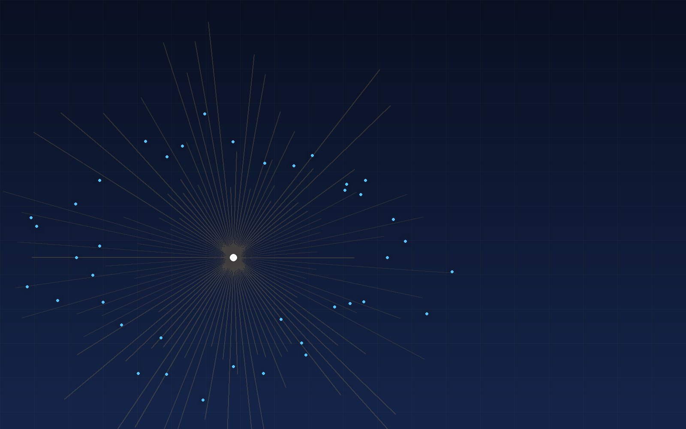

USD PRG · Est. 2026
USD PRG · Est. 2026
Robots that see, move & decide.
The Perception and Robotics Group at the University of San Diego builds the estimation, perception, and control foundations for autonomous systems that have to work outside the lab — on the coast, in the air, and on difficult terrain.
- Research thrusts
- 05
- Open roles
- 03
- Located in
- San Diego

Live estimateAbout the group
Perception is the bottleneck. We treat it that way.
We are a research group in the Department of Computer Science at the University of San Diego. Our work sits at the boundary between what a robot can sense and what it can safely do.
Every autonomous system is only as good as its estimate of the world. We build estimation and perception methods that stay honest under noise, occlusion, and changing conditions — then we put them on real hardware and go outside.
- Hardware-first. Every project has a physical platform and a field protocol.
- Open by default. Code, datasets, and calibration routines released where possible.
- Student-led. Undergraduates and graduate researchers own real subsystems, not busywork.

Research
Five thrusts, one question: how does a machine know where it is?
Each thrust is a long-horizon program with its own platforms, students, and field sites — but they share math, code, and lab space.
News
What's happening in the lab
Announcements, accepted papers, field campaigns, and open positions.
Join us
We are recruiting our founding cohort.
We are looking for graduate and undergraduate researchers who want to build real robots, not just simulations. If you are comfortable being wrong in public and fixing it fast, we want to talk to you.